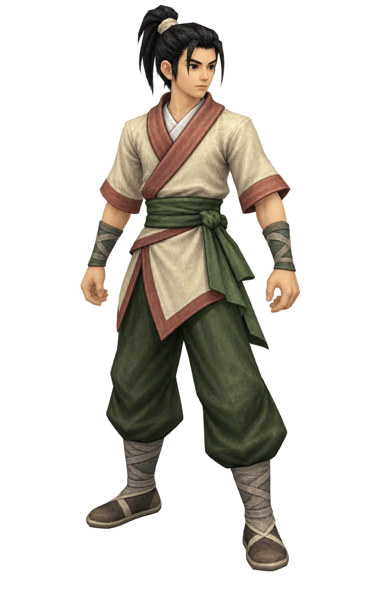

登入 ・ 九藜大地
帳號
密碼
連線登入
訪客進入
繁體中文
軒轅劍網路版 ・ 線上重製
選擇伺服器
SELECT SERVER
軒轅劍
正常
煉妖壺
正常
盤古斧
正常
軒轅劍
九藜大地 ・ 和平繁盛
連線狀態
返回
確定
選擇角色
CHARACTER SELECT
伺服器：軒轅劍
一
角色欄位一
尚未建立角色
二
角色欄位二
尚未建立角色
返回
建立人物
進入遊戲
建立人物
CREATE CHARACTER

劍客
角色名稱
種族
人族
天人
修羅
性別與形象
男
女
體型一
體型二
職業
思想流派
儒家
道家
墨家
法家
兵家
陰陽家
初始能力配點
剩餘點數：
10
取消
完成建立
技能
◀
1 / 10
▶
雷達地圖
□
天人冒險區
239, 367
新旅人
人族・劍客 Lv 1
狀態
體力
100 / 100
法力
70 / 70
經驗
Lv 1
角色資訊
狀態
新旅人
職業 劍客
體力值 99 / 143
法力 63 / 173
攻擊力 30
防禦力 16
負重力 17 / 81
體力
80
智慧
90
魅力
90
體質
65
靈活
65
運氣
124
耐力
70
敏捷
65
火 5
水 5
風 12
雷 18
陰 5
陽 20
等級
4
下次升級 ▰▰▱▱
目標
人物
裝備
物品
法術
動作
一般
隊伍
公會
密語
[系統]
已連線。
[狂猿水擊]
你在幹嘛
附近
隊伍
公會
密語
送出
天人冒險區
待機中
走路
音效 ON
人
人物
裝
裝備
物
物品
法
法術
隊
隊伍
友
好友
設
系統
滑鼠點地移動 ｜ 點選目標 ｜ Q 攻擊 ｜ R 走／跑 ｜ Tab 地圖
×